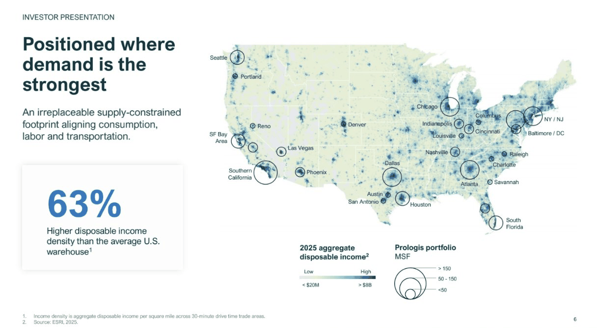
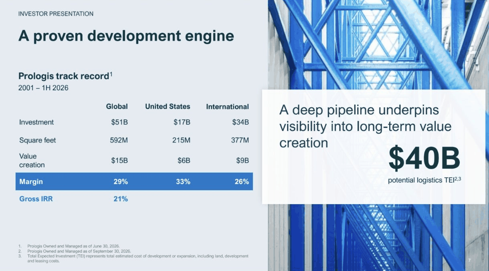
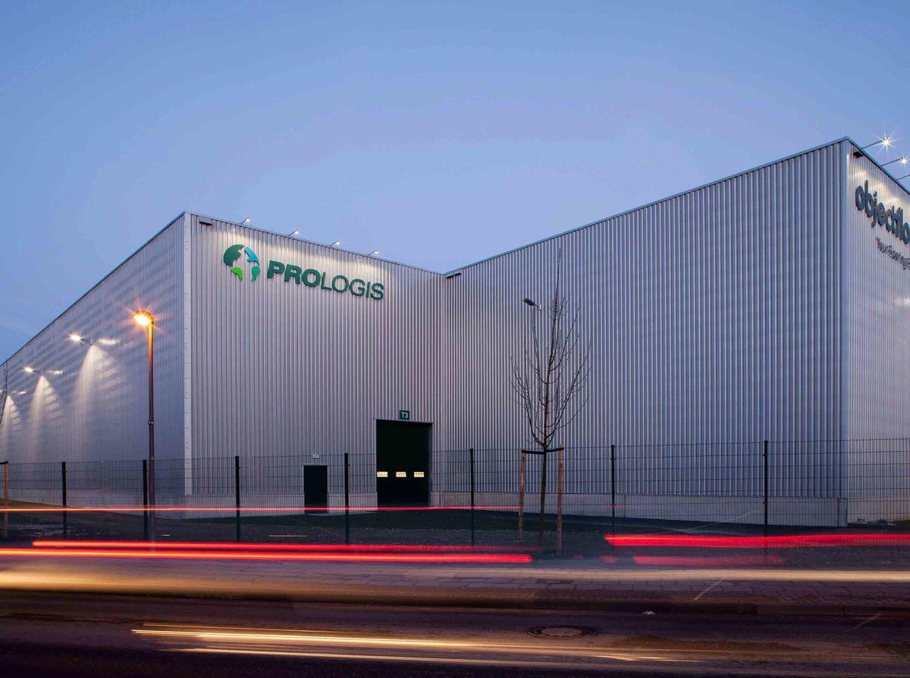

Analyse
Prologis: Neue Mietverträge bringen 38 % mehr Miete, der FFO je Aktie steigt um 7 %
$PLD
Einer der größten Logistik-Vermieter der Welt rechnet für 2026 mit 6,25 bis 6,29 Dollar FFO je Aktie, zahlt 1,07 Dollar Quartalsdividende und baut Rechenzentren. Wie gut die Dividende gedeckt ist, wo das Wachstum herkommen soll und was Prologis gegenüber Segro, STAG und WDP kostet.
Kurz gesagt
Die Zahlen: Umsatz 2,4 Mrd. $ (+8 %), Core FFO je Aktie 1,60 $ (+7 %), die Prognose für 2026 liegt bei 6,25 bis 6,29 $. Die Mieten: Bei neuen Verträgen liegt die Miete im Schnitt 38 % über der alten, ein Jahr zuvor waren es 49 %. Die Dividende: 1,07 $ je Quartal (+6 %), rund 3,3 % Rendite, etwa zwei Drittel des Core FFO. Der Preis: Die Aktie kostet das 21-Fache des FFO, STAG nur das 12-Fache.
Prologis vermietet Hallen an die Unternehmen, die sich sonst die Waren zuschicken lassen: Händler, Hersteller, Paketkonzerne. Rund 1,3 Mrd. Quadratfuß in 20 Ländern gehören dem Konzern oder werden für Fonds verwaltet, die Kunden reichen von Target und Home Depot über Coca-Cola und Tesla bis zu DHL. An der Börse ist der Konzern rund 126 Mrd. $ wert. Für Dividendenanleger ist die Frage, wie lange die Mieten noch so kräftig steigen, dass die Ausschüttung mitwächst.
Die Zahlen: Mieten treiben den Gewinn
Das dritte Quartal
Der Umsatz stieg im dritten Quartal um 8 % auf 2,4 Mrd. $. Entscheidend für REITs ist der Funds from Operations, kurz FFO, der Abschreibungen herausrechnet: Der Core FFO je Aktie lag bei 1,60 $ nach 1,49 $ im Vorjahr. Der AFFO, der auch Investitionen in die Bestände abzieht, wuchs um 13 % auf 1,2 Mrd. $. Für das Gesamtjahr hat Prologis einen Core FFO von 6,25 bis 6,29 $ je Aktie in Aussicht gestellt, die Auslastung soll bei 95,25 bis 95,5 % liegen.
Wie stark die Mieten steigen
Bei neu abgeschlossenen Mietverträgen lag die Miete im dritten Quartal im Durchschnitt 38 % über der bisherigen, bei den tatsächlich gezahlten Beträgen immerhin 23 %. Das ist weniger als vor einem Jahr, damals waren es 49 beziehungsweise 29 %. Die Mieten steigen weiter, der Rückenwind hat aber offenbar nachgelassen. In den bestehenden Hallen legten die Mieteinnahmen im selben Quartal um 5,7 % zu. Die Auslastung liegt mit 95 % hoch und leicht über dem Vorjahr.

Dass Prologis diese Aufschläge verlangen kann, hat mit den Standorten zu tun. 84 % der Mieteinnahmen stammen aus den USA, vor allem aus Ballungsräumen wie Südkalifornien, New York, Chicago und Dallas. Im Umkreis der Hallen liegt das verfügbare Einkommen pro Fläche 63 % über dem Umfeld eines durchschnittlichen US-Lagerhauses. Auch die Kundenstruktur ist breit gestreut: Ein Viertel der Fläche geht an Logistikdienstleister, jeweils etwa ein Fünftel an Händler, Großhändler und Hersteller.
Die Dividende: gut gedeckt
Prologis zahlt 1,07 $ je Quartal, nach 1,01 $ im Vorjahresquartal. Das sind 4,28 $ im Jahr und bei einem Kurs von rund 128 $ eine Rendite von etwa 3,3 %. Gemessen an der Prognose für den Core FFO nimmt die Ausschüttung rund 68 % in Anspruch, der Rest bleibt im Unternehmen. Im dritten Quartal flossen 1,1 Mrd. $ an die Aktionäre, das entspricht gut 85 % des AFFO. Das ist für einen REIT eine solide Deckung und lässt Raum für weitere Erhöhungen.
Wo das Wachstum herkommen soll
Neubau und Verwaltung für Dritte
Prologis baut selbst: Für dieses Jahr sind Baustarts von 5,0 bis 5,8 Mrd. $ geplant, dazu Fertigstellungen von 2,5 bis 3,0 Mrd. $. Die Bilanz der Entwicklungsprojekte ist über die Jahre gut: Seit 2001 hat Prologis rund 51 Mrd. $ investiert und eine Marge von 29 % erzielt, die interne Rendite liegt bei 21 %. Im Landbestand stecken weitere Projekte mit einem Volumen von rund 40 Mrd. $. Daneben verdient das Unternehmen Gebühren für die Verwaltung von Fonds, im Quartal waren es 164 Mio. $.

Rechenzentren
Der größte neue Hebel sind Rechenzentren. Prologis besitzt Grundstücke mit Stromanschlüssen, und die sind für Betreiber gefragt. 5,8 Gigawatt Leistung hat der Konzern gesichert oder in fortgeschrittenen Gesprächen, davon 1,7 Gigawatt bereits gesichert. 88 % davon liegen in den USA. Offenbar rechnet Prologis damit, dass Strom der knappste Faktor wird und seine Flächen deshalb an Wert gewinnen. Wie viel davon in den kommenden Jahren in die Gewinne fließt, lässt sich bisher nicht abschätzen.

Prologis im Vergleich
Die Tabelle stellt Prologis dem Logistik-REIT STAG und den beiden bekanntesten Dividenden-REITs im Hub gegenüber, Realty Income und NNN REIT. Als Maßstab dient das Verhältnis von Kurs zu FFO je Aktie, weil Gewinnkennzahlen bei REITs durch Abschreibungen und Neubewertungen verzerrt sind.
| Unternehmen | Rendite | Kurs zu FFO | FFO-Ausschüttung | Dividendenwachstum 1 Jahr |
|---|---|---|---|---|
| Prologis | 3,3 % | 20,6 | 63 % | +5,9 % |
| 3,9 % | 12,4 | 49 % | +0,7 % | |
| 5,3 % | 15,3 | 82 % | +2,9 % | |
| NNN REIT | 5,8 % | 12,2 | 67 % | +3,1 % |
Prologis kostet das 21-Fache des FFO je Aktie, die drei anderen zwischen dem 12- und 15-Fachen. Dafür fällt die Rendite am niedrigsten aus, die Dividende wächst aber mit knapp 6 % am schnellsten. Für den Aufschlag bekommt der Anleger Größe, Rechenzentren und eine Entwicklungsmaschine, die die anderen nicht in dem Umfang haben. Für europäische Logistik-REITs wie Segro oder WDP liegen im Hub bisher keine FFO-Daten vor.
Was dagegen spricht
Die Neuvermietungen bringen weniger Aufschlag als vor einem Jahr, und die Mieten im Bestand steigen langsamer als im Frühjahr. Die Verschuldung ist mit einer Nettoverschuldung von rund 4,9 Jahres-EBITDA im Hub vergleichsweise hoch, der Konzern selbst nennt allerdings eine Verschuldungsquote von nur 31,5 % und Liquidität von 8,8 Mrd. $. 84 % der Mieten kommen aus den USA, ein Dämpfer bei Konsum und Handel würde dort zuerst ankommen. Im Entwicklungsgeschäft fiel der Wertzuwachs aus Fertigstellungen im dritten Quartal mit 39 Mio. $ deutlich niedriger aus als ein Jahr zuvor mit 169 Mio. $, solche Beträge schwanken von Quartal zu Quartal.
Was als Nächstes ansteht
Mit den Zahlen zum Jahresende kommt die Prognose für 2027. Entscheidend wird, ob die Mieten bei Neuabschlüssen weiter zweistellig über dem Bestand liegen und wie viel das Geschäft mit Rechenzentren beiträgt.
Das ist keine Anlageberatung.
Quellen
- Prologis, Q3 2026 Earnings Supplemental
- Prologis, Investor Presentation 2026 (Quartr)
- Eigene Auswertung der Kennzahlen im Aktien-Hub, Stand 26./27.11.2026
Bei Google als bevorzugte Quelle hinzufügen
Hinweis: Dieser Text dient der allgemeinen Information und ist weder Anlage-, Steuer- noch Rechtsberatung. Kapitalanlagen sind mit Risiken verbunden, bis hin zum Totalverlust.